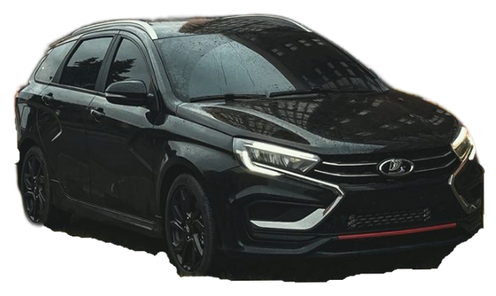

Индустрия без скуки
Более 300 аддонов для Create — строй конвейеры, поезда и сложные производственные линии.

VAZcraftНе просто выживание. Целая вселенная Create, где каждая шестерня запускает что-то большее.
«Неважно, в каком состоянии машина — резина должна быть начернена».
Юра Волков
VAZcraft — место для тех, кому мало поставить одну печку. Здесь идеи превращаются в механизмы, а механизмы — в целые города.
Более 300 аддонов для Create — строй конвейеры, поезда и сложные производственные линии.
Осваивай мир в своём темпе: исследуй, проектируй и воплощай проекты вместе с другими игроками.
Мощное серверное оборудование размещено в Санкт-Петербурге для комфортной игры.
На базе NeoForge собрана большая коллекция дополнений для Create. Она открывает новые способы строить, автоматизировать и удивляться тому, что ты придумал.
Проходка на VAZcraft — от 300 рублей. Выбирай свой путь и готовься запускать первую линию.
Как попасть на серверСтоимость начинается от 300 ₽. Актуальные условия уточняйте у администрации сервера.
Сервер работает на NeoForge. Совместимую версию Minecraft и инструкцию по установке сборки уточняйте у администрации.
Стоимость начинается от 300 рублей. Итоговая цена зависит от актуальных условий сервера — уточните их перед оплатой.
Мощные серверы VAZcraft размещены в Санкт-Петербурге.